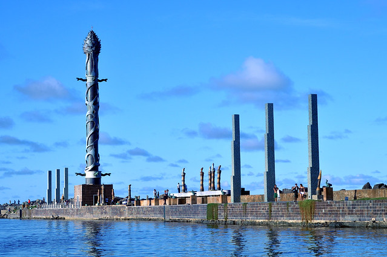

Bem vindo ao Parque das esculturas Francisco Brennand
O Parque das Esculturas Francisco Brennand é um local icônico localizado na cidade de Recife, no estado de Pernambuco, Brasil. Ele foi criado e idealizado pelo renomado artista plástico brasileiro Francisco Brennand, que é conhecido por suas esculturas e cerâmicas únicas e expressivas. O parque está situado em uma área de aproximadamente 13 mil metros quadrados, próxima ao bairro histórico de Recife Antigo, às margens do Rio Capibaribe, oferecendo uma vista espetacular da cidade e do rio.
História:
O parque foi inaugurado em 2000 e é resultado do trabalho de décadas de Francisco Brennand, que transformou uma antiga fábrica de cerâmica em um espaço de arte singular. As esculturas e instalações presentes no parque são um reflexo da estética peculiar de Brennand, que muitas vezes incorpora elementos da mitologia, da religião e da cultura brasileira em suas criações. O local é uma verdadeira imersão na mente criativa do artista.
Destaques:
As esculturas de cerâmica são o principal destaque do Parque das Esculturas. Elas são diversas e fascinantes, muitas vezes lembrando formas orgânicas e figuras místicas. A Torre de Cristal, no centro do parque, é uma das obras mais emblemáticas.
O espaço ao ar livre é um destaque em si, com trilhas, jardins exuberantes e uma atmosfera única, tornando-o um lugar perfeito para contemplação e apreciação da arte.
O Museu Francisco Brennand, localizado nas proximidades do parque, exibe ainda mais obras do artista e oferece aos visitantes uma visão aprofundada de sua carreira e processo criativo.
Pontos Gastronômicos Próximos:
Após uma visita ao Parque das Esculturas Francisco Brennand, os visitantes podem explorar a cena gastronômica da região. Há diversos restaurantes e bares no bairro de Recife Antigo, que fica a uma curta distância de carro ou a pé. Alguns pratos típicos da culinária pernambucana que você pode experimentar incluem a tapioca, o acarajé, a carne de sol e o bolo de rolo. Não deixe de provar também a rica diversidade de frutos do mar oferecidos na região.
Lazer:
Além da apreciação das esculturas e da arte de Francisco Brennand, o Parque das Esculturas também oferece um ambiente agradável para atividades ao ar livre, como piqueniques e caminhadas. A vista panorâmica do Rio Capibaribe é um convite para momentos de contemplação e relaxamento. O parque é um local frequentemente utilizado para eventos culturais e exposições temporárias, proporcionando aos visitantes uma experiência sempre renovada.
Em resumo, o Parque das Esculturas Francisco Brennand é um tesouro artístico e cultural no coração de Recife, oferecendo aos visitantes a oportunidade de se maravilhar com as obras de um dos mais importantes artistas brasileiros do século XX, além de proporcionar momentos de lazer e contemplação em um ambiente naturalmente belo. Com sua localização estratégica próxima a restaurantes e ao centro histórico, é uma parada obrigatória para quem visita a cidade.